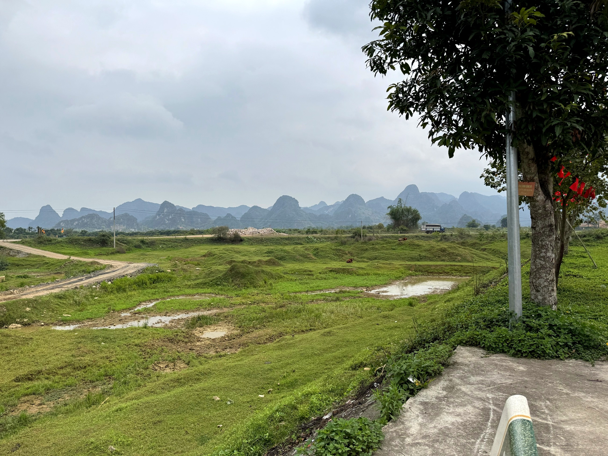
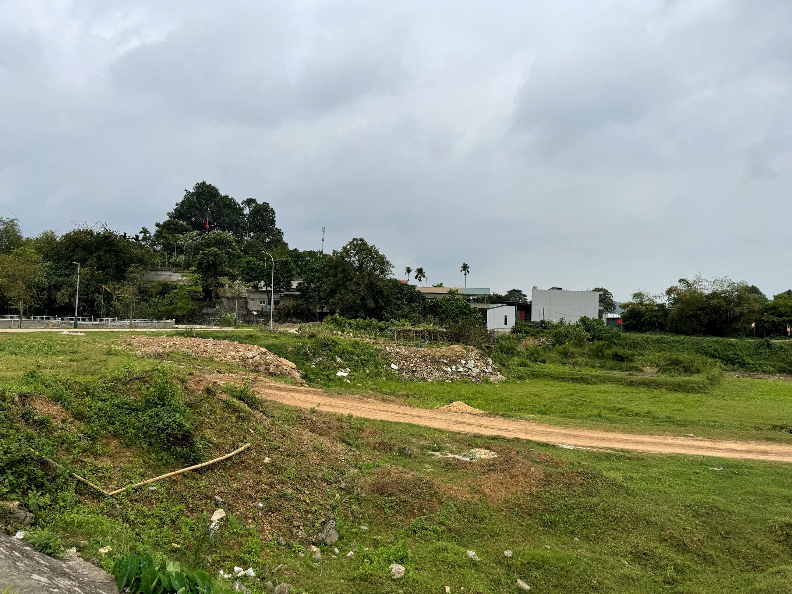
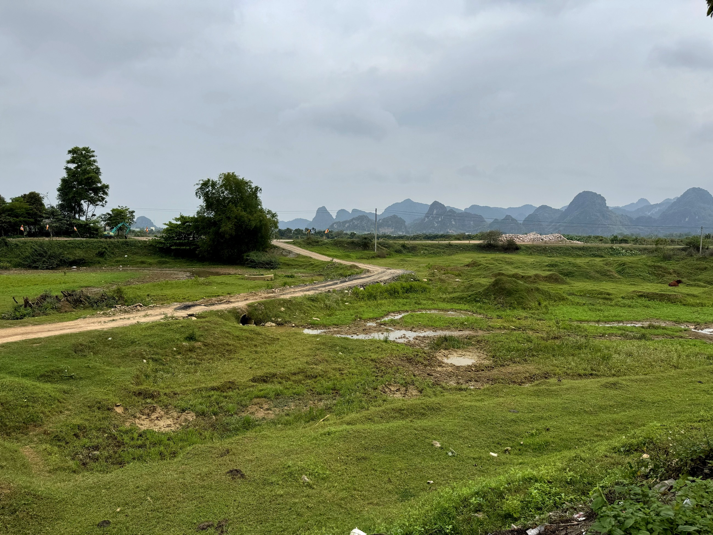

Loại hìnhLoại hìnhLoại hình
Không gian văn hoáCultural spaceCultural space

Tourism Hub – Nhà văn hoá thôn Đồi Dùng được khởi công năm 2021, tọa lạc cạnh Hồ Baibóo, gần đường Hồ Chí Minh – vị trí thuận lợi cho việc tiếp đón du khách từ nhiều hướng. Công trình có diện tích hơn 300m², sức chứa khoảng 200 người, đáp ứng tốt nhu cầu tổ chức sự kiện cộng đồng quy mô lớn.
Không chỉ là không gian sinh hoạt văn hóa của cộng đồng thôn Đồi Dùng, nhà văn hóa đã được trao thêm sứ mệnh quan trọng: trở thành văn phòng của Tổ điều phối du lịch cộng đồng Mường Cốc. Đây là điểm đón tiếp đầu tiên, nơi du khách được tư vấn hành trình, nhận thông tin về các điểm đến và khởi đầu mọi tour tham quan Mường Cốc.
Tourism Hub – Nhà văn hoá thôn Đồi Dùng được khởi công năm 2021, tọa lạc cạnh Hồ Baibóo, gần đường Hồ Chí Minh – vị trí thuận lợi cho việc tiếp đón du khách từ nhiều hướng. Công trình có diện tích hơn 300m², sức chứa khoảng 200 người, đáp ứng tốt nhu cầu tổ chức sự kiện cộng đồng quy mô lớn.
Không chỉ là không gian sinh hoạt văn hóa của cộng đồng thôn Đồi Dùng, nhà văn hóa đã được trao thêm sứ mệnh quan trọng: trở thành văn phòng của Tổ điều phối du lịch cộng đồng Mường Cốc. Đây là điểm đón tiếp đầu tiên, nơi du khách được tư vấn hành trình, nhận thông tin về các điểm đến và khởi đầu mọi tour tham quan Mường Cốc.
Tourism Hub – Nhà văn hoá thôn Đồi Dùng được khởi công năm 2021, tọa lạc cạnh Hồ Baibóo, gần đường Hồ Chí Minh – vị trí thuận lợi cho việc tiếp đón du khách từ nhiều hướng. Công trình có diện tích hơn 300m², sức chứa khoảng 200 người, đáp ứng tốt nhu cầu tổ chức sự kiện cộng đồng quy mô lớn.
Không chỉ là không gian sinh hoạt văn hóa của cộng đồng thôn Đồi Dùng, nhà văn hóa đã được trao thêm sứ mệnh quan trọng: trở thành văn phòng của Tổ điều phối du lịch cộng đồng Mường Cốc. Đây là điểm đón tiếp đầu tiên, nơi du khách được tư vấn hành trình, nhận thông tin về các điểm đến và khởi đầu mọi tour tham quan Mường Cốc.


Tourism Hub – Nhà văn hoá thôn Đồi Dùng hướng tới trở thành trung tâm điều phối du lịch cộng đồng chuyên nghiệp của Mường Cốc, đồng thời là không gian văn hóa đa năng phục vụ cả cộng đồng địa phương và du khách. Định hướng nâng cấp hạ tầng đón tiếp, xây dựng phòng trưng bày sản phẩm – di sản, phát triển kiosk thông tin điện tử và mở rộng kết nối với các tuyến giao thông công cộng từ trung tâm Hà Nội. Điểm đến Du lịch cộng đồng Mường Cốc, Xã Mỹ Đức – Thành phố Hà NộiTourism Hub – Nhà văn hoá thôn Đồi Dùng hướng tới trở thành trung tâm điều phối du lịch cộng đồng chuyên nghiệp của Mường Cốc, đồng thời là không gian văn hóa đa năng phục vụ cả cộng đồng địa phương và du khách. Định hướng nâng cấp hạ tầng đón tiếp, xây dựng phòng trưng bày sản phẩm – di sản, phát triển kiosk thông tin điện tử và mở rộng kết nối với các tuyến giao thông công cộng từ trung tâm Hà Nội. Điểm đến Du lịch cộng đồng Mường Cốc, Xã Mỹ Đức – Thành phố Hà NộiTourism Hub – Nhà văn hoá thôn Đồi Dùng hướng tới trở thành trung tâm điều phối du lịch cộng đồng chuyên nghiệp của Mường Cốc, đồng thời là không gian văn hóa đa năng phục vụ cả cộng đồng địa phương và du khách. Định hướng nâng cấp hạ tầng đón tiếp, xây dựng phòng trưng bày sản phẩm – di sản, phát triển kiosk thông tin điện tử và mở rộng kết nối với các tuyến giao thông công cộng từ trung tâm Hà Nội. Điểm đến Du lịch cộng đồng Mường Cốc, Xã Mỹ Đức – Thành phố Hà Nội